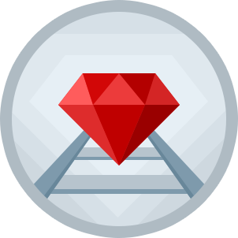

Ваш язык программирования - Ruby!

Динамический, рефлективный, интерпретируемый высокоуровневый язык программирования[7][8]. Язык обладает независимой от операционной системы реализацией многопоточности, строгой динамической типизацией, сборщиком мусора и многими другими возможностями[⇨]. По особенностям синтаксиса он близок к языкам Perl и Eiffel, по объектно-ориентированному подходу — к Smalltalk. Также некоторые черты языка взяты из Python, Lisp, Dylan и Клу.
Кроссплатформенная реализация интерпретатора языка является полностью свободной[5].